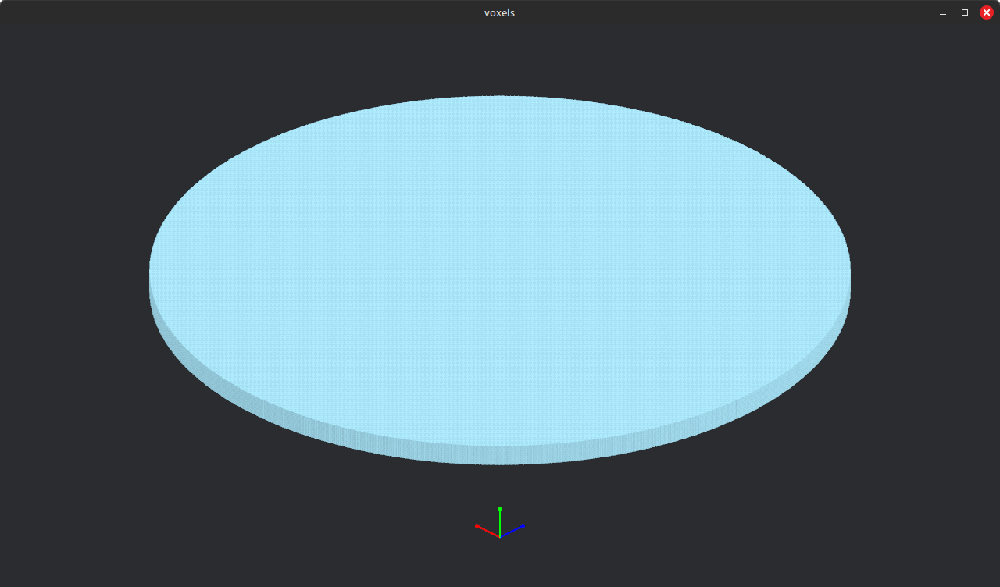
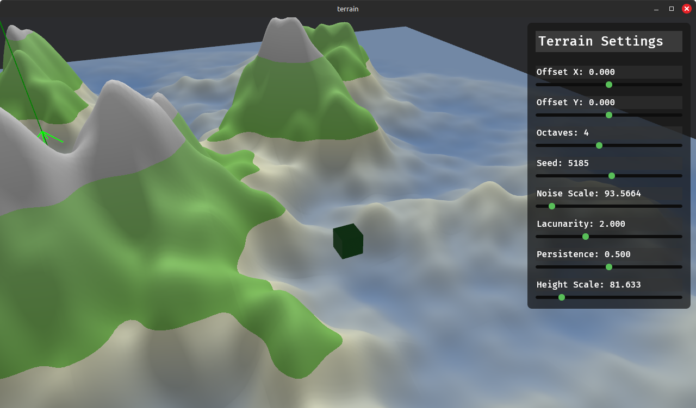
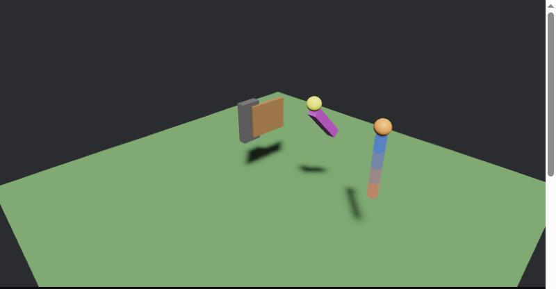

GPU-driven rendering pipelines, a from-scratch physics engine, and a zero-copy serialization format. Every project here is built around minimizing CPU overhead, draw calls, or copies — instead of reaching for the naive approach first.

A custom voxel rendering engine on top of Bevy. Greedy meshing, instanced rendering, and multi_draw_indirect collapse an entire visible world into one GPU draw call per frame — ~26.4 million voxels rendered with CPU overhead that's O(1) regardless of world size.

Live DemoA tile-based procedural terrain system for Bevy built around a multi-draw indirect render pipeline, a custom slot-map instance manager, and double-buffered GPU uploads. CPU draw call overhead is O(1) regardless of tile count.
Renders via WebGPU (indirect draw isn't possible on WebGL2) — use a current Chrome or Edge.

Live DemoA real-time rigid body physics engine implementing Extended Position-Based Dynamics (Müller et al., SIGGRAPH 2020) — distance, hinge, servo, and mouse-driven grab constraints on a sub-stepped solver fully decoupled from rendering.